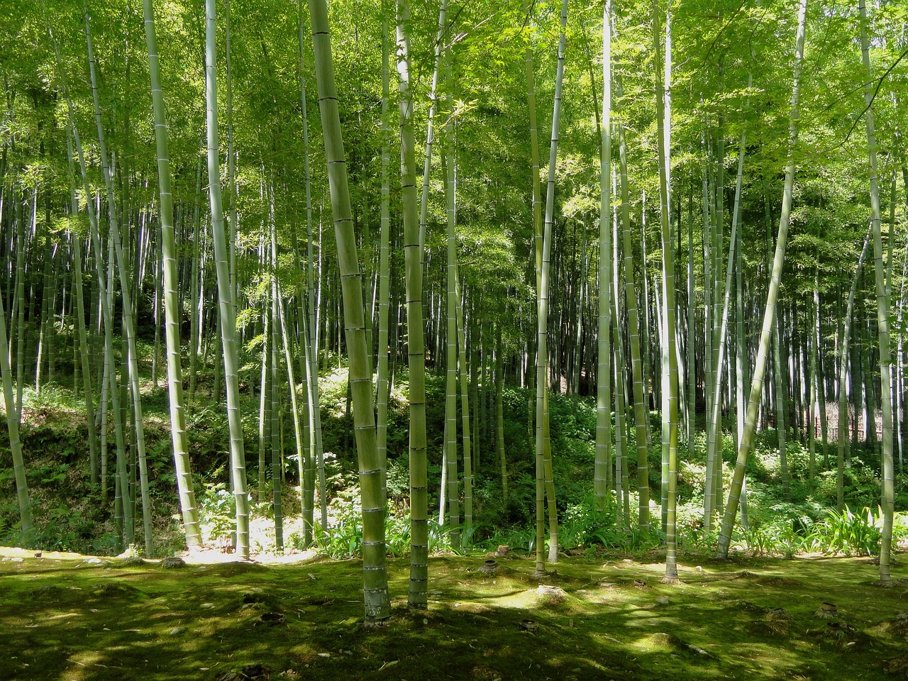

Our bamboo journey was a transformative odyssey, weaving through ancient traditions, cutting-edge research, and the boundless potential of this remarkable plant. From verdant forests to laboratory corridors, each step revealed the profound significance of bamboo in our world.
Embarking on a journey of exploration into the realm of bamboo, we set out to unravel the mysteries of this remarkable plant and unearth the wealth of knowledge it holds. Our expedition, fueled by curiosity and a thirst for discovery, took us on a captivating adventure through dense forests, ancient traditions, and cutting-edge research, revealing the true essence of bamboo and its profound significance in our world.
Our journey began with a simple question: What makes bamboo so special? Armed with curiosity and a desire to delve deeper, we embarked on a quest for answers, eager to uncover the secrets hidden within the vibrant green stalks of this enigmatic plant. Venturing into bamboo forests, we were immediately struck by the sheer diversity and abundance of life that surrounded us. Towering bamboo shoots stretched towards the sky, their lush foliage forming a verdant canopy overhead. In the midst of this lush greenery, we felt a sense of awe and reverence for the natural world, and our journey of discovery began in earnest.
As we delved deeper into the heart of bamboo country, we encountered a rich tapestry of culture and tradition woven around this humble plant. From ancient rituals to modern-day practices, bamboo has played a central role in the lives of people across the globe for centuries. In Asia, where bamboo has long been revered as a symbol of strength, resilience, and prosperity, we witnessed firsthand the deep reverence with which it is regarded. From bamboo forests in China to bamboo groves in Japan, we marveled at the intricate craftsmanship and artistic mastery displayed in everything from bamboo baskets to traditional musical instruments.
Our journey of discovery took us beyond the realm of tradition and into the world of science, where we sought to uncover the secrets of bamboo through rigorous research and analysis. Drawing on the latest advancements in botany, ecology, and materials science, we delved into the inner workings of this extraordinary plant, uncovering a treasure trove of insights along the way. One of the most fascinating aspects of our research was exploring bamboo's remarkable growth rate and resilience. Through field studies and laboratory experiments, we discovered that bamboo possesses a unique combination of traits that enable it to thrive in a wide range of environments, from tropical rainforests to arid deserts.
As our journey drew to a close, we found ourselves inspired by the myriad ways in which bamboo is being harnessed to address some of the most pressing challenges facing our world today. From sustainable construction to renewable energy, bamboo is proving to be a versatile and valuable resource with the potential to revolutionize industries and transform lives. In the realm of architecture and design, bamboo is being embraced as a sustainable alternative to traditional building materials, thanks to its strength, durability, and eco-friendly properties. Innovations such as bamboo-based composites and engineered bamboo products like towels, pillows, and clothes have been opening up new possibilities some for green construction and infrastructure development. This has also led to a find in particular ways to clean bamboo and how it's also a promising products.
Our journey of researching bamboo has been a profound and transformative experience, one that has deepened our appreciation for the wonders of the natural world and the importance of living in harmony with it. From the lush bamboo forests of Asia to the cutting-edge laboratories of the scientific community, we have witnessed firsthand the remarkable resilience and potential of this extraordinary plant. As we reflect on our journey, we are filled with a sense of hope and optimism for the future. With continued research, innovation, and stewardship, we believe that bamboo has the power to shape a brighter, more sustainable world for generations to come. And so, we bid farewell to this chapter of our journey, knowing that the lessons we have learned and the discoveries we have made will guide us on our path forward, as we continue to explore, learn, and grow in harmony with nature.